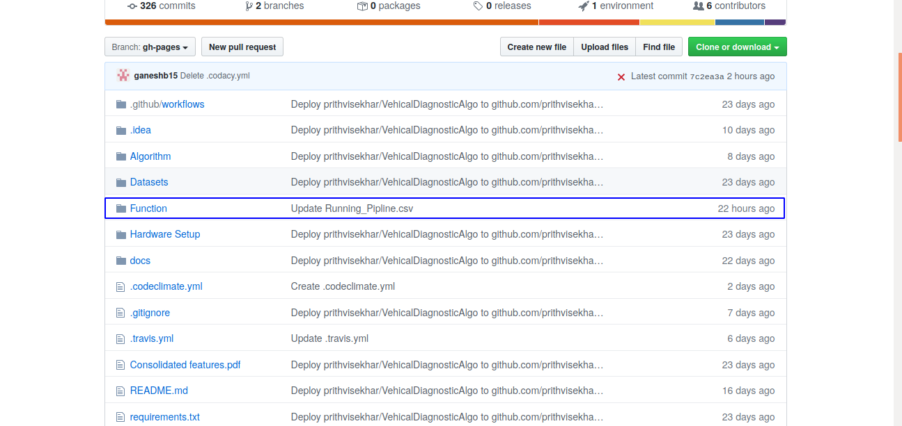
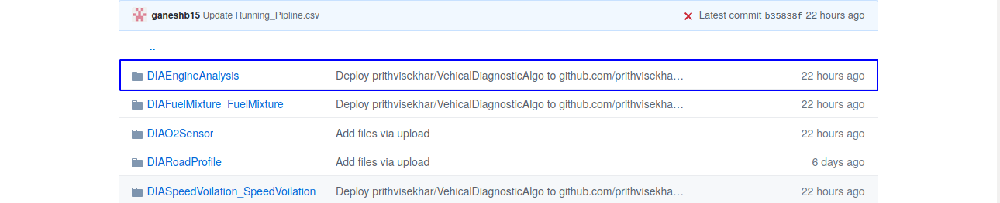
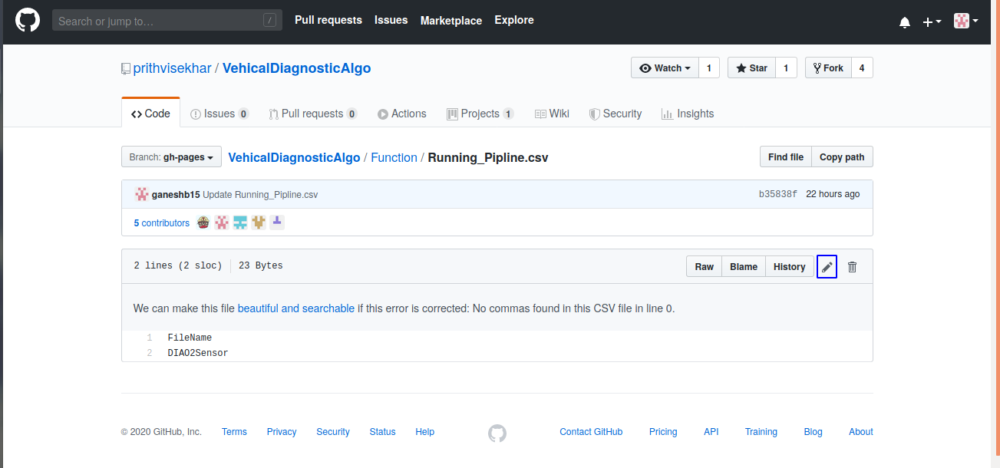
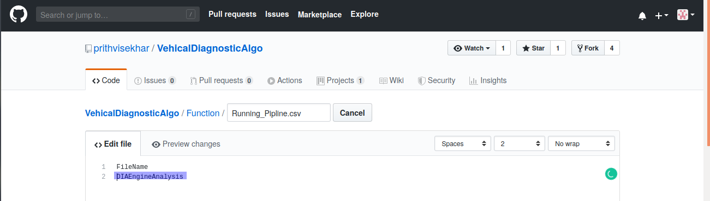
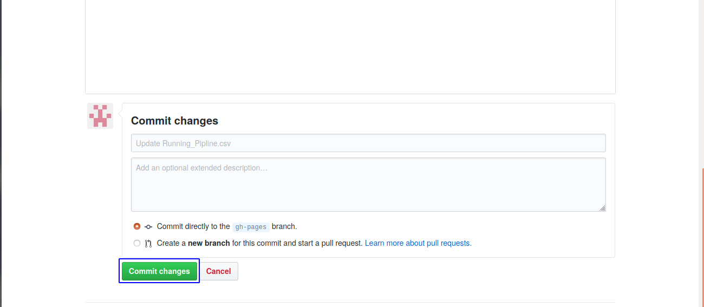
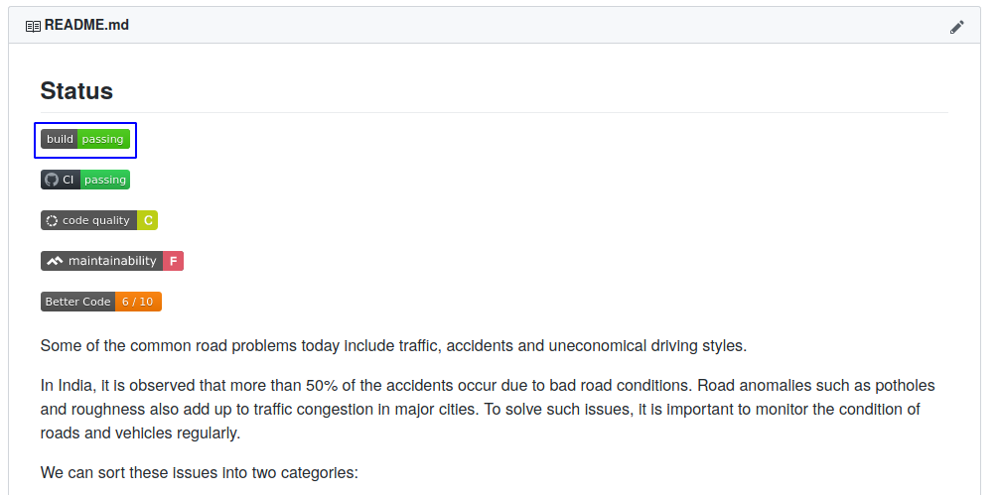
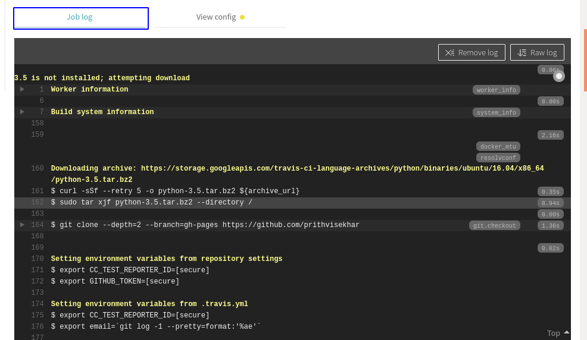

1.Select the Branch Folder. Change in the blue rectangle area.

2.Select the Function Folder.Click in the blue rectangle area.

3.Create the folder of the file name you want. According to the naming convention.In this sample we are using DIAEngineAnalysis.

4.Go to Running_Pipline.csv.

5.Click on edit. [Click on the blue rectangle area]

6.Add the folder name in the CSV. In this sample it is DIAEngineAnalysis

7.Commit the changes.

8.Go to Travis CI by clicking on the blue box.

9.Check the output in the "Job Log " in Travis CI .

10.Check the output in the "Job Log " in Travis CI .

11.Check the error in the code if any.

12.You can check your coverage report in this folder in "index.html".